はじめに
最初に現場を作り、その現場の中へ施工場所や試験を登録します。画面下部のメニューから、施工チェック、スリーブ、設定などへ進めます。
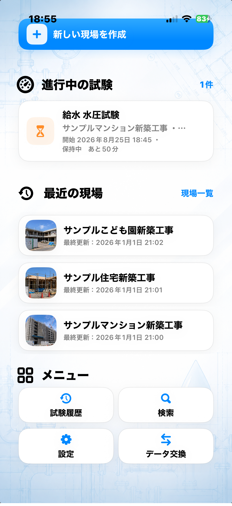
実在する会社・顧客・現場の情報ではありません。
基本的な使い方
現場を作る
ホームで「新しい現場を追加」を押し、現場名などを入力して保存します。
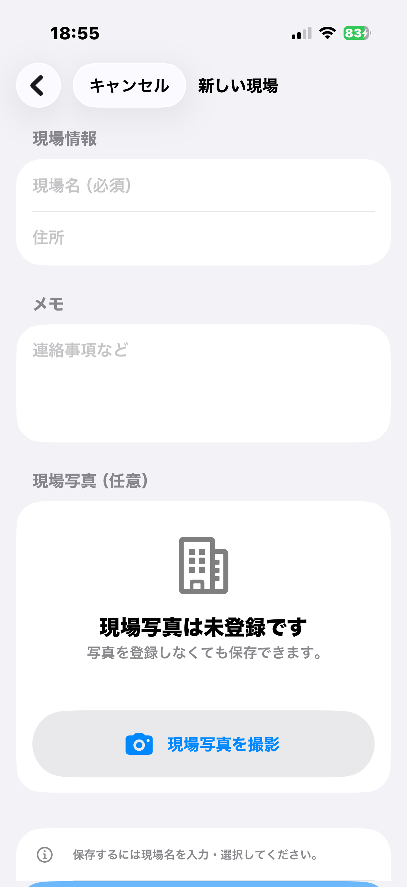
現場を開く
ホームの現場名を押します。現場詳細から、施工場所、耐圧試験、施工チェック、スリーブへ進めます。
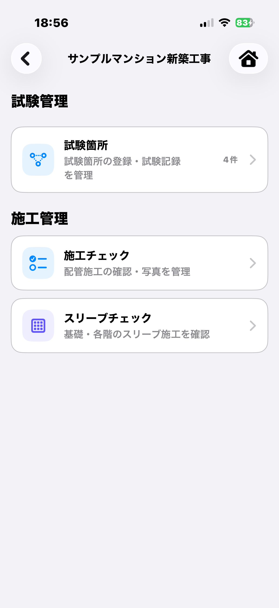
施工場所を作る
施工場所一覧から追加画面を開き、「1F 101号室」など分かりやすい場所名を入力して保存します。
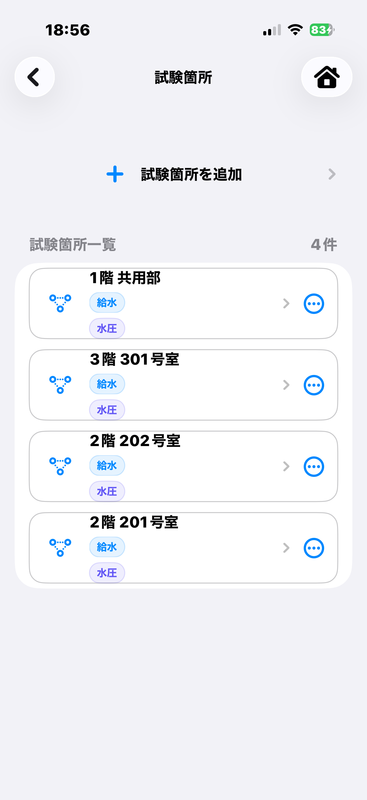
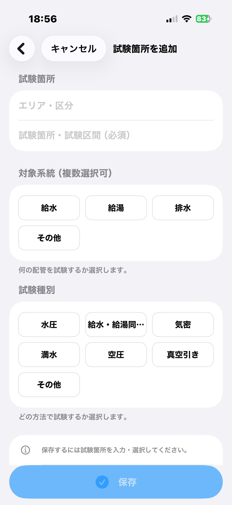
試験を登録する
施工場所を選び、試験の種類、圧力、保持時間などを入力して保存します。
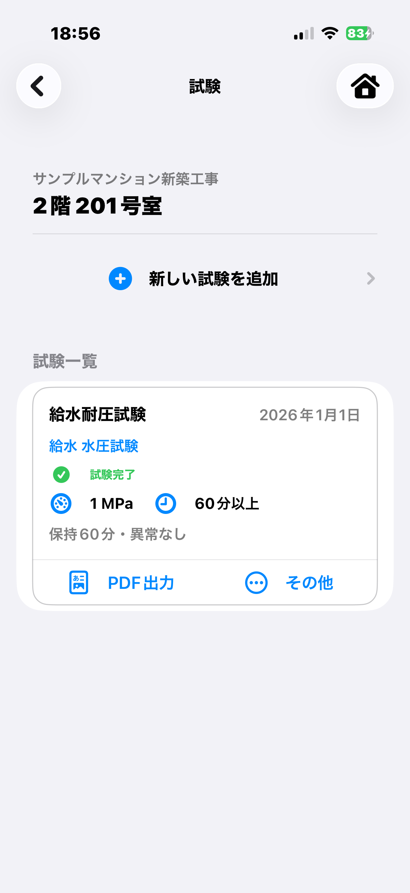
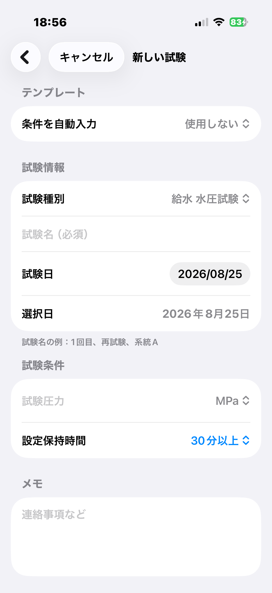
試験を開始する
開始写真や開始時の値を確認して試験を開始します。進行中は経過時間と残り時間を確認できます。
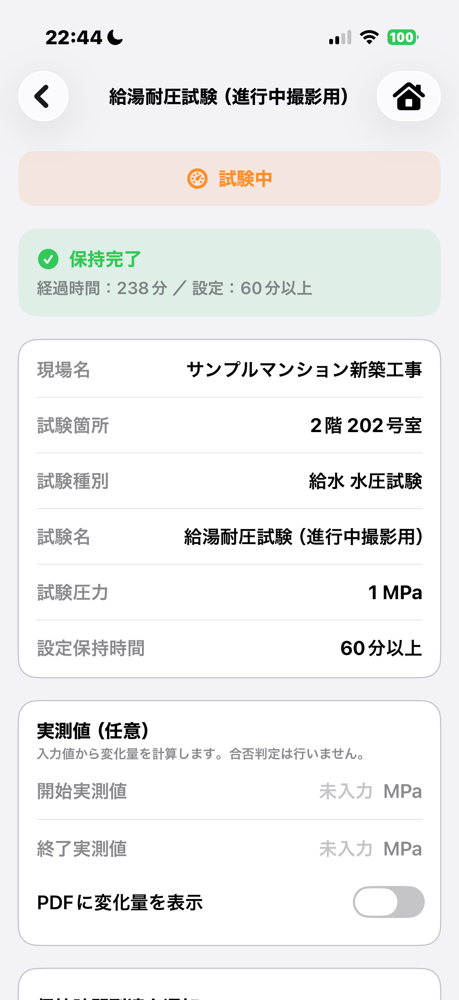
試験を終了する
終了時の値や終了写真を記録し、結果を確認します。必要な場合は、画面に表示される「やり直し」や通知設定を利用できます。
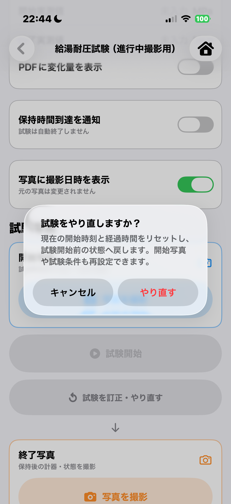
写真・メモ・PDFを確認する
試験詳細で開始写真、終了写真、記録写真、メモを確認できます。「PDF出力」から記録書を作成して共有します。
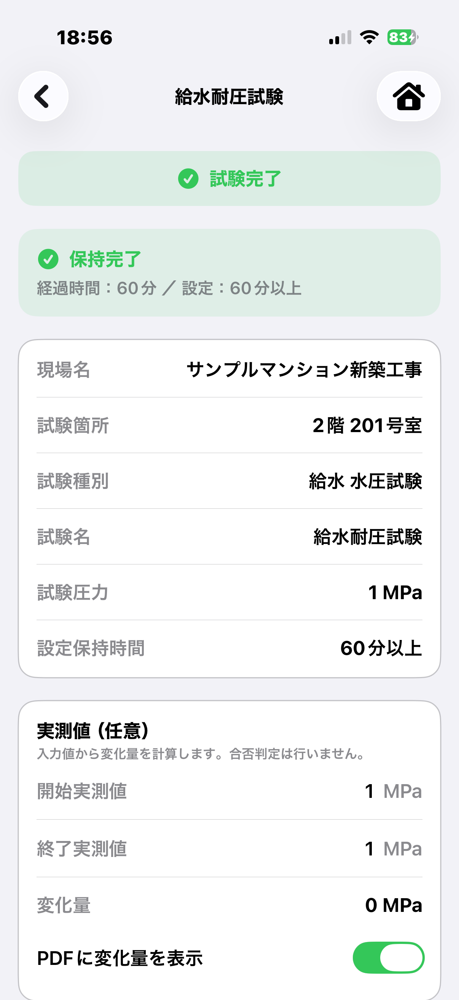
施工チェック
施工場所を選び、その場所のチェック項目を開きます。詳細画面では状態、写真、メモを記録できます。
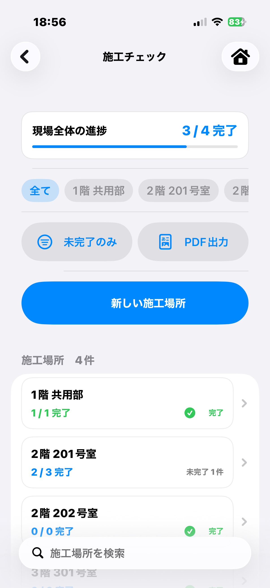
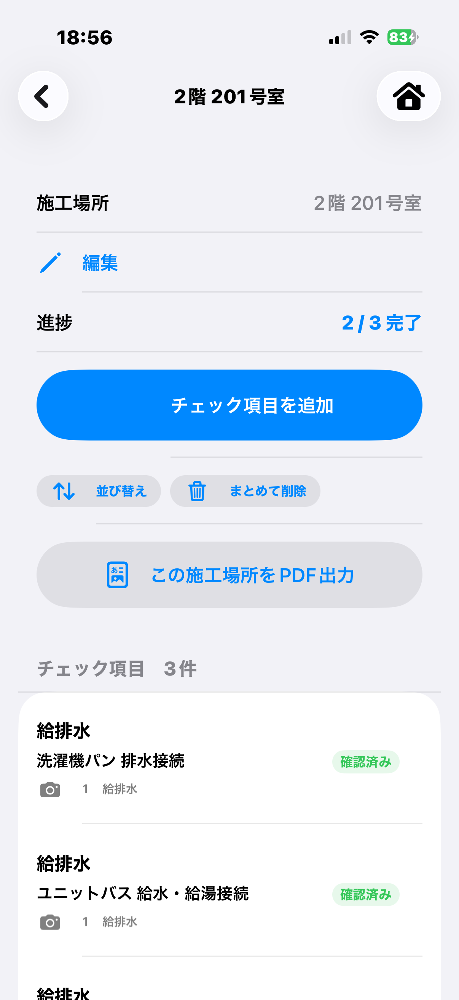
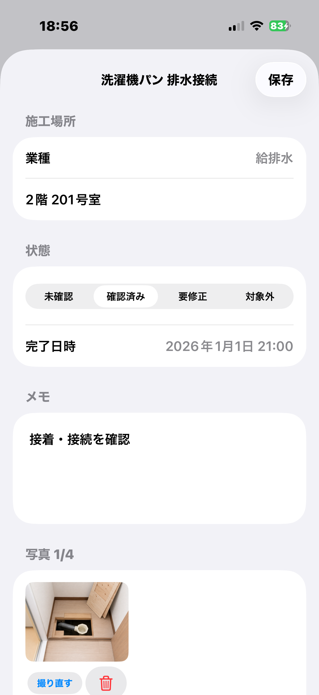
スリーブ管理
スリーブ一覧から新規登録できます。詳細では用途、径、本数、確認状態、写真、備考を確認します。
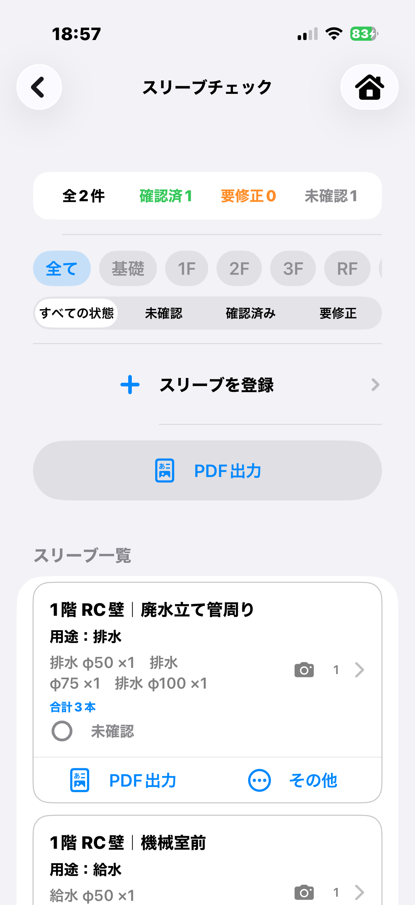
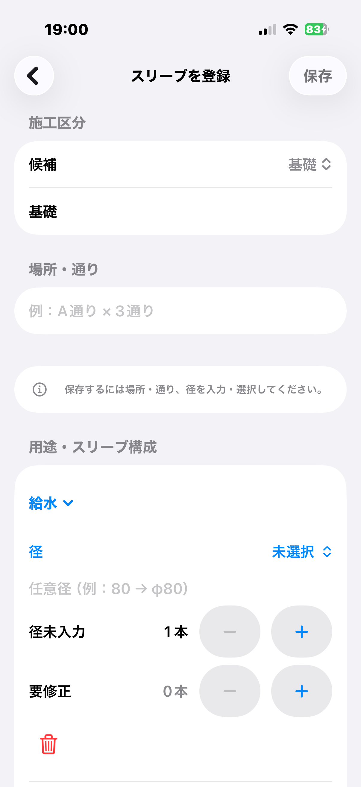
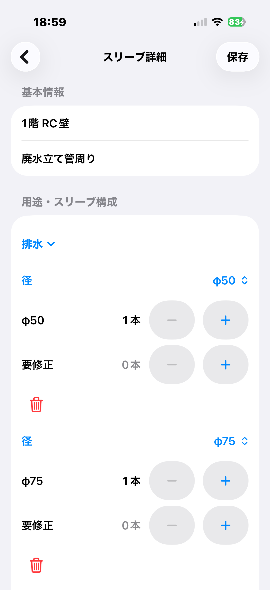
現場データ交換
現場の記録と関連写真を交換ファイルとして書き出したり、受け取った交換ファイルを取り込んだりできます。この機能はPRO版の対象です。
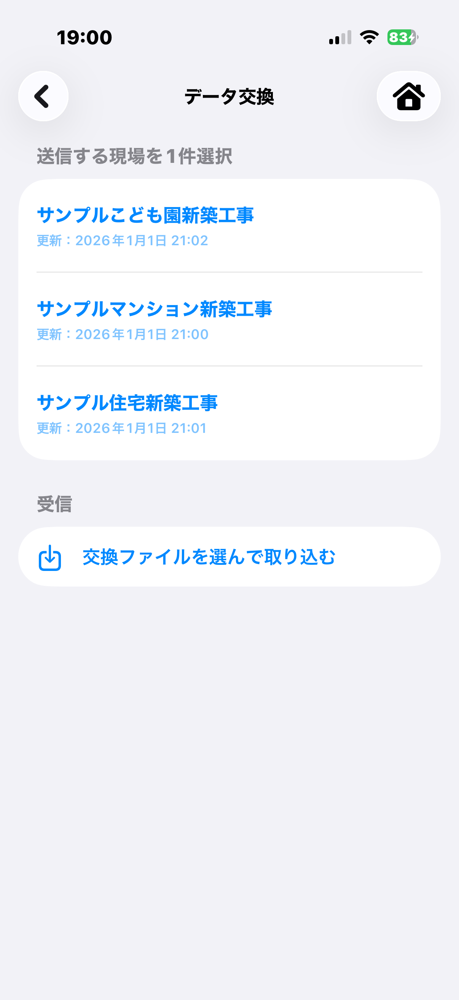
既存現場を更新する場合は、画面に表示される現場名と更新内容を確認してから操作してください。
設定
設定では、アプリ内の表示言語、PRO版、会社・担当者情報などを確認できます。会社情報はPRO版PDFへ反映するための設定です。
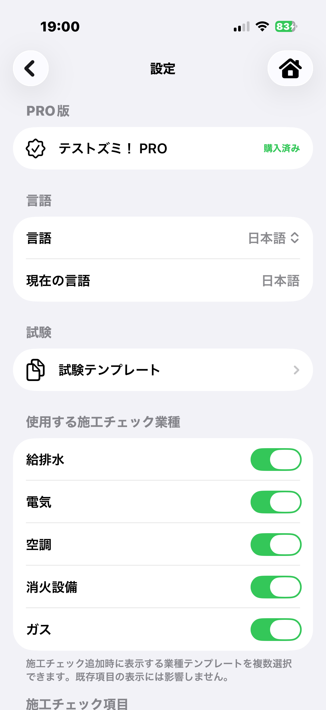